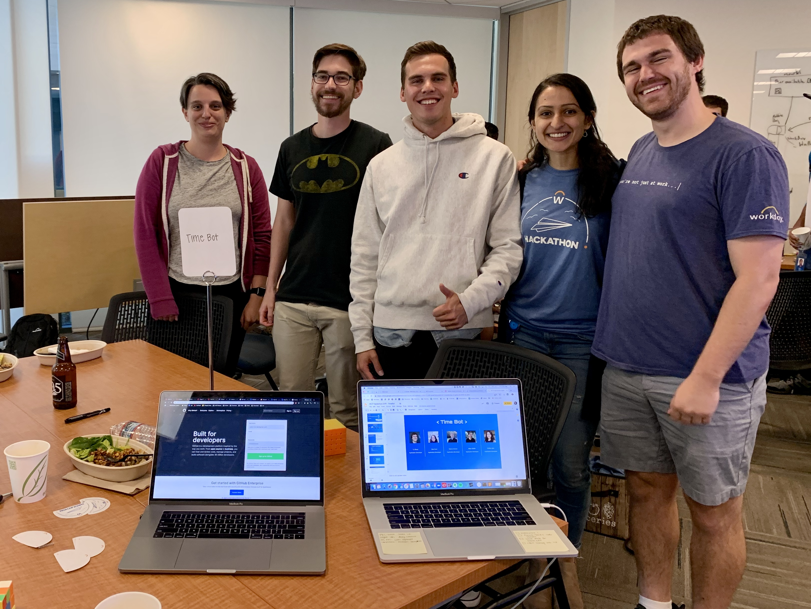

About Me
-



-
After graduating from the University of Washington, I worked for over 3 years at Workday, Inc. as a Software Engineer on the time tracking team working on projects ranging from core product functionality to Time Anomalies, a cross-team machine learning feature.
Inspired by machine learning projects at work and the occasional hackathon, I applied and was accepted into University of Texas: Austin’s MSCS program with an intent to focus on Deep Learning.
In 2022, I transitioned to being a full-time student so I could focus on my program. If I'm not studying, I'm usually skiing, working on my teardrop camper, or trying to cook a new recipe like karaage (Japanese fried chicken!).